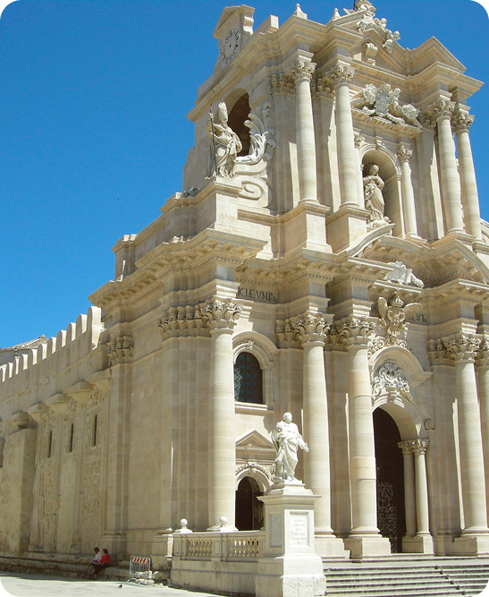

Tra mare e pietre
Piazza del Duomo si trova nel punto più elevato dell’antica isola di Ortigia, nel centro storico di Siracusa, ed è considerata una delle piazze più affascinanti e scenografiche della Sicilia. Questo spazio urbano non è solo il centro religioso della città, ma anche un luogo dove si intrecciano secoli di storia mediterranea, dall’antichità classica alle più eleganti trasformazioni barocche del XVIII secolo.
La configurazione di Piazza del Duomo è insolita: la sua geometria irregolare e leggermente curva segue il terreno e l’antico tracciato dell’acropoli greca, creando un effetto armonico e dinamico. La pavimentazione in pietra chiara riflette la luce del sole, offrendo prospettive sempre diverse mentre ci si muove tra le facciate barocche che incorniciano lo spazio.
Il fulcro della piazza è la Cattedrale di Siracusa, dedicata alla Natività di Maria: un edificio che incorpora parti dell’antico Tempio dorico di Atena voluto dal tiranno Gelone nel 480 a.C. Nel corso dei secoli il tempio fu trasformato prima in chiesa cristiana, poi in moschea sotto la dominazione araba e infine ricostruito in stile barocco dopo il terremoto del 1693.